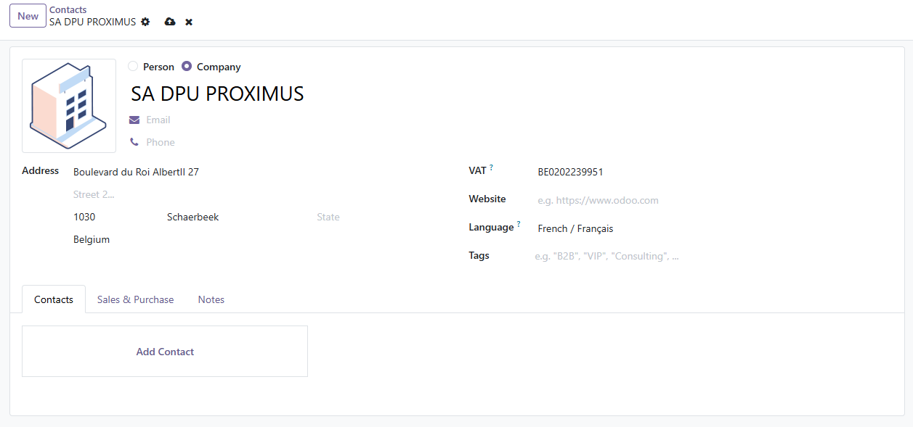
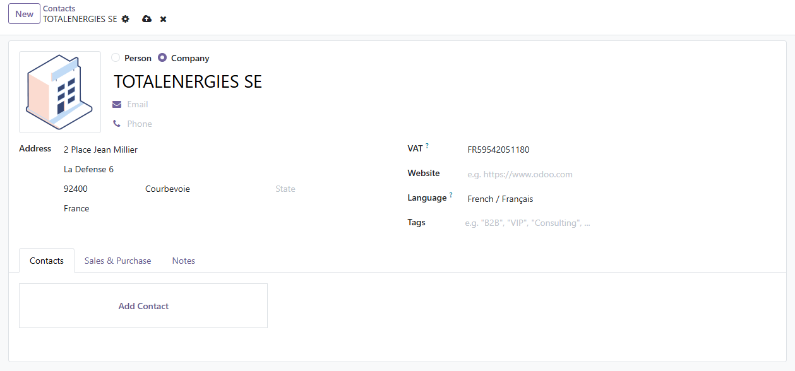
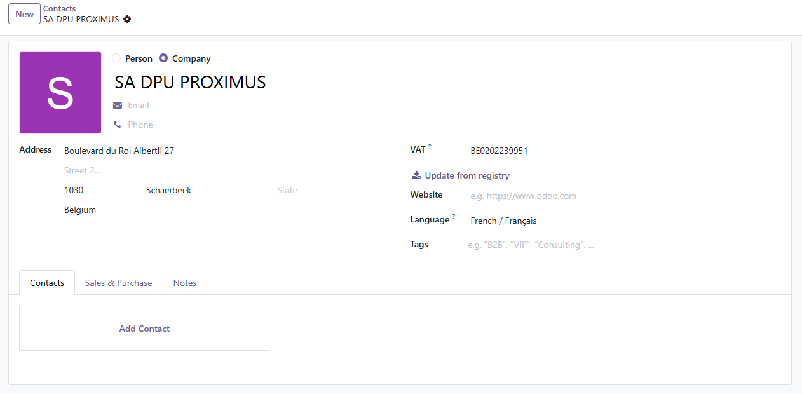

Enterprise / VAT numbers (BE0403170701, 0403.170.701) are checked against
VIES, the European Commission's official VAT service, which returns the name and address
registered at the BCE/KBO.
SIREN, SIRET or VAT numbers are looked up in the SIRENE registry (INSEE) through the government API recherche-entreprises.api.gouv.fr. The intra-community VAT number is computed automatically.
No subscription, no credits, no account to create. Works alongside Odoo's Partner Autocomplete: name search stays available, the VAT field uses the official registry.
No need to type the name first.
In the VAT field: Belgian enterprise number, French SIREN, SIRET or VAT number. Spaces and dots are fine.
Name, street, zip, city, country, company registry and VAT number are filled in when you leave the field.


For French companies, type an approximate name and click Search company by name: pick the right company among the active ones in the SIRENE registry and the contact is filled in.
On a saved company, the Update from registry button refreshes the name and address, for example after a move.

Questions, bugs or a need for another country or more fields (NACE codes, legal form, directors...)? Contact me at support@propublisher.be.